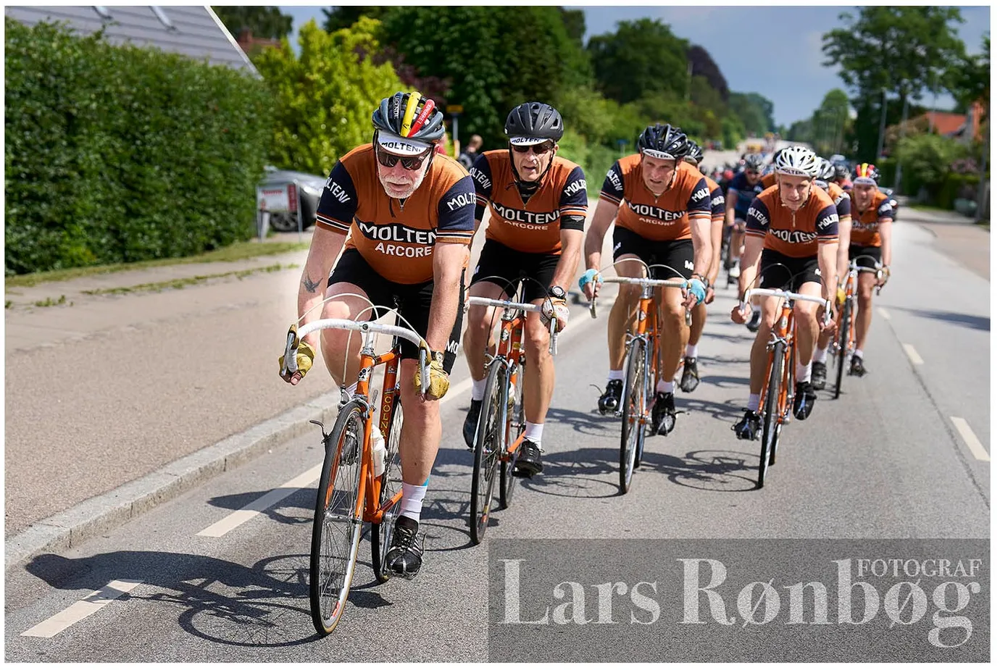
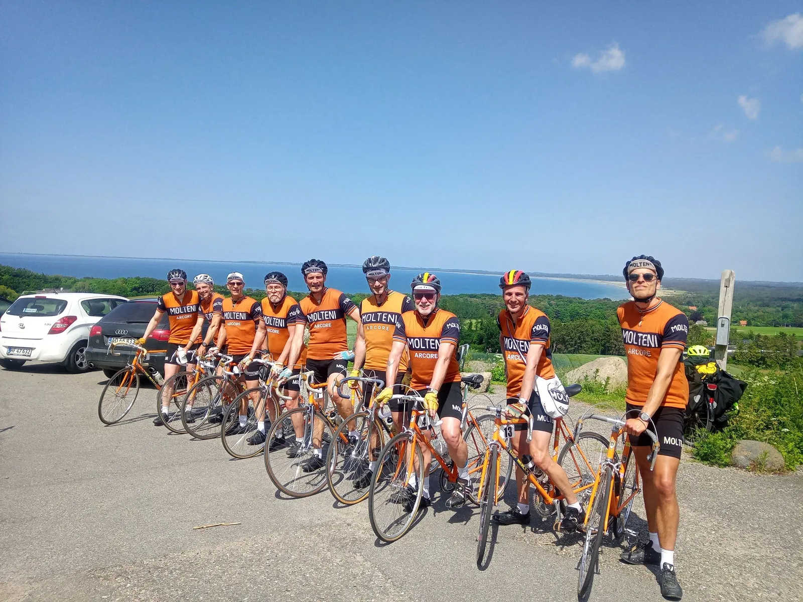
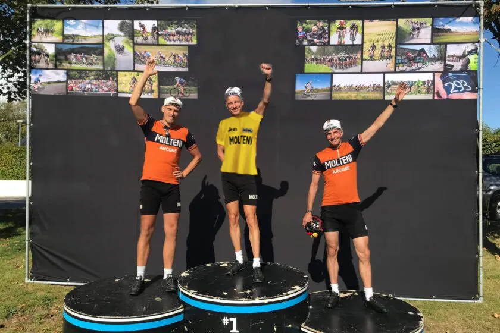

Tour de Storebælt – Tour de France 1973

Squadra Moltenis stærke 9-mandshold dominerede Tour de Storebælt, og vandt ikke overraskende stålklassen – både individuelt og holdkonkurrencen. Men holdet er faktisk ude på en helt anden mission, der sendte Kristian Blume i gult …
Sammen med 4000 andre ryttere blev Squadra Molteni sendt afsted fra Roskilde kl. 11.40. Foran ventede en kopi af 2. etape , Tour de France 2022. 196 km fra Roskilde over Holbæk, Veddinge Bakker, Havnsø, Kalundborg, Korsør og via Storebæltsbroen til Nyborg.
Skrivebordsbeslutning uden hold i virkeligheden
Løbsarrangørerne havde valgt, at sende alle 4000 ryttere afsted samtidig. En skrivebordsbeslutning uden hold i virkeligheden. Ujævn kørsel, der klumpede sig sammen ved den mindste lille bakke, og en masse styrt, var konsekvenserne. Men det blev ikke den sidste dårlige beslutning fra løbsarrangørerne, der tydeligvis ikke har forhørt sig ved udenlandske kolleger, hvordan man laver et motionscykelløb med 10.000+ deltagere.
– Plan A var at vi skulle stikke i højre og venstre. Men det var umuligt. Der var simpelthen for mange ryttere i vejen. Eigil Leegaard forsøgte sig en enkelt gang, men det resulterede i, at han var lige ved at blive væk, fortæller Kaptajn Bjørnsteen.
Først 10 km før Holbæk lykkedes det os at få plads – og så etablerede vi Plan B: “Det Orange Eksprestog”, der skulle sætte et hårdt tempo gennem Odsherred og mod Storebæltsbroen.


Holdbillede på toppen af Høve
Efter 55 km ventede Veddinge Bakker. Først Côte d’Asnæs Indelukke og derefter Côte d’Høve Stræde. På toppen af Høve Stræde var holdet godt 5 minutter foran tidsplanen, og derfor mente holdets SoMe ekspert, Svend Seegert, at et holdfoto med Sejrøbugten som baggrund ville være perfekt. Et kort ophold blev bevilliget, men da Svend begyndte at gøre klar til en TikTok-video, piftede Kaptajnen til afgang.


Kaos på Côte d’Kårup
Veddinge Bakkers sidste stigning, den fantastiske Côte d’Kårup Standbakke, blev desværre delvis ødelagt. Først fik Jeppe Thiemer en mindre defekt halvvejs på stigningen, som han dog selv kunne udbedre. Men på slutningen af stigningen, dér hvor bakken for alvor tager fat, ja der havde et par hundrede Rynkeby-ryttere valgt at gøre ophold ud over hele vejen.
– Er det noget de har lært på et af deres weekendkurser, at når én må af og trække, så skal alle af og trække?, lyder det fra løjtnant Kasper Sørensen.
Men dér midt på bakken, var der gule Rynkeby’er over alt. Gående, siddende og et par stykker liggende. Det var kaos,
Heldigvis lykkedes det Squadra Molteni at skære sig gennem det infernalske Rynkeby-kaos – og videre mod Havnsø, hvor det lige blev tid til at få tanket drikkedunken op.
Kamikaze og depotkaos
Efter Kalundborg havde de føromtalte løbsarrangører fået den rigtig dårlige idé, at flette 4000 ryttere sammen med de 6000 ryttere, der skulle køre fra Kalundborg til Nyborg. Enhver kan sige sig selv, at det vil give kaos. Det gjorde det også: De mange meget urutinerede ryttere, var en stor udfordring at komme udenom. Rigtig mange virkede usikre og placerede sig direkte forkert på vejen.
– På et tidspunkt skal vi forbi en større flok fra “Vi cykler for forældreløse børn” eller sådan noget. De kørte så usikkert og var skyld i flere farlige situationer, så jeg måtte uddele indtil flere røfler, fortæller Jens Langergaard.
Og bedst som det næsten ikke kunne blive værre skete det. Alt stod pludselig stille 2 km før depotet ved Mullerup Strand. Løbsarrangørerne havde simpelthen ikke haft fantasi til af forestille sig, at når 10.000 ryttere ledes ind på en meget smal vej i et sommerhusområde, hvor der også er lagt et depot, så vil det give kaos. Men det gjorde det!
– Vi måtte af og gå 2 km i cykelsko. Og vi snakker ikke om rask gang. Nej, det var stop-and-go og over en time. Det var ligesom at være på shopping med min kone, lyder det fra Grane Maaløe.
Gudinder med gule sløjfer
Ventetiden på næsten halvanden time ved Mullerup Strand havde ikke kun ødelagt Squadra Moltenis tidsplan, men den havde også bevirket, at der skulle køres tempokørsel for at nå frem til Storebæltsbroen, inden den lukkede for cyklister.
Jamen, der var ikke andet at gøre end at kalde til Formazione del’tempo. Vi hamrede afsted i sidevinden. Efter godt 5 km indhenter vi en gruppe gudinder med ens douche farvede Pas Normal Studio trøjer – med gule silkesløjfer bundet på cykelhjelmen, fortæller Kaptajn Bjørnsteen.
Jeg når lige at spørge en af dem, hvorfor de har gule sløjfer på. “Det er for at vi bedre kan finde hinanden”, sagde en gudinde…Nå, men vi fortsatte mod Storebæltsbroen.

Storebæltsbroen og SoMe-føring.
Storebæltsbroen blev ikke helt den store oplevelse, som ønsket. Det var kun tilladt at cykle i én vognbane – og det gav indlysende nok ét stort felt.

Men igen fik Svend Seegert en god SoMe-idé: Hvis nu Squadra Molteni fik kørt sig op gennem feltet og lagde sig forrest, så ville det give nogle gode Instagrambilleder. Så det gjorde vi.

En helt anden mission – og Kristian Blume i gult
Den cykelhistoriekyndige læser vil allerede nu have noteret sig, at Squadra Molteni kørte med rygnumre fra Tour de France i 1970’erne. Og hvorfor mon det? Sagen er den, at holdet er ude og råde bod på et alvorligt hul i Moltenis historie – nemlig Tour de France 1973!
Eddy Merckx vandt i Tour de France i 1969 og 1970 for Faema-holdet. Merckx skiftede til Molteni i 1971, og fortsatte med at vinde Tour de France i 1971, og igen i 1972. Men i 1973 stillede Molteni ikke op til Tour de France! Franskmændene var sure over, at Merckx vandt hele tiden – og endda for et italiensk hold. Og ledelsen på pølsefabrikken Molteni mente forøvrigt, at der ville være mere reklame i, at Molteni og Merckx kørte Giro d’Italia og Vuelta a España. Så sådan blev det i 1973.
Squadra Molteni, der nu i tæt kontakt med Pierangela og Mario Molteni, der er datter og søn af den legendariske Ambrogio Molteni, har fået til opgave, at vinde Tour de France 1973, så der kan komme orden i historien. Så det er vi i gang med…

Tour de France 1973 – 2. etape:
1. 6:50:45 Kristian Blume, Squadra Molteni
2. 6:50:46 Jeppe Thiemer, Squadra Molteni
3. 6:50:47 Lars Munch, Squadra Molteni
4. 6:50:47 Eigil Leegaard, Squadra Molteni
5. 6:50:47 Niels Bjørnsteen, Squadra Molteni
6. 6:50:47 Jens Langergaard, Squadra Molteni
7. 6:50:48 Svend Seegert, Squadra Molteni
8. 6:50:48 Kasper Sørensen, Squadra Molteni
9. 6:50:48 Grane Maaløe, Squadra Molteni

Klassement, Tour de France 1973
1. 6:50:45 Kristian Blume, Squadra Molteni
2. +0:00:01 Jeppe Thiemer, Squadra Molteni
3. +0:00:02 Lars Munch, Squadra Molteni
4. +0:00:02 Eigil Leegaard, Squadra Molteni
5. +0:00:02 Niels Bjørnsteen, Squadra Molteni
6. +0:00:02 Jens Langergaard, Squadra Molteni
7. +0:00:03 Svend Seegert, Squadra Molteni
8. +0:00:03 Kasper Sørensen, Squadra Molteni
9. +0:00:03 Grane Maaløe, Squadra Molteni